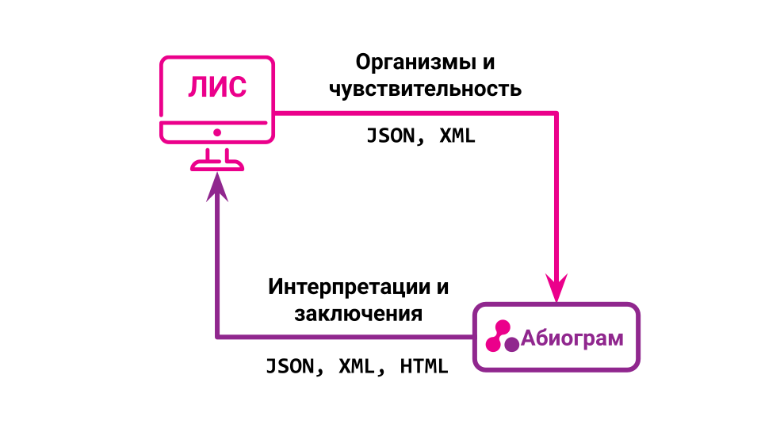
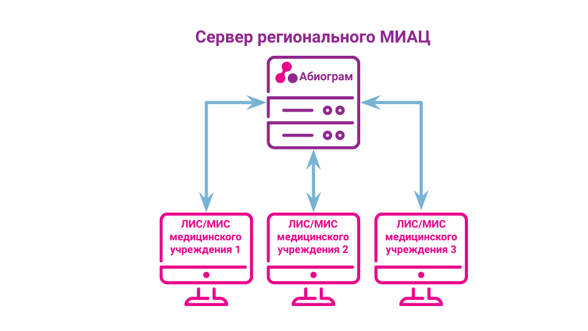

Ключевая идея ПО
Ключевая идея программного обеспечения (ПО) «Справочно-информационная система «Абиограм» заключается в интеграции с существующими лабораторными информационными системами (ЛИС) и/или медицинскими информационными системами (МИС) и микробиологическими анализаторами. Также возможно прямое взаимодействие медицинского персонала с интерфейсом ПО. Итогом работы программного обеспечения является формирование микробиологического заключения с оценкой результатов на основе установленных правил.
Программное обеспечение использует следующую информацию:
- Вид возбудителя;
- Внутренний номер возбудителя;
- Результаты определения чувствительности к антибиотикам для данного возбудителя;
- Используемые критерии для определения чувствительности;
- Идентификатор пациента.
Используя полученную информацию ПО проводит интерпретацию результатов на основе установленных критериев в соответствующих документах и осуществляет валидацию результата с применением установленных правил. Результатом работы ПО является сформированное микробиологическое заключение, которое отправляется в ЛИС/МИС, или в виде графического отображение представляется персоналу (в случае непосредственного использования веб-интерфейса ПО).
Функциональные характеристики
«Справочно-информационная система «Абиограм» позволяет:
- валидировать микробиологическое заключение;
- осуществлять системный трекинг ошибок в определении чувствительности к антимикробным препаратам;
- интегроваться с существующими ЛИС/МИС, а также в случае их отсутствия использовать веб-интерфейс;
- осуществлять информационную поддержку для микробиолога и клинического фармаколога;
- компенсировать дефицит кадров со специализированными навыками в области оценки результатов определения чувствительности для клинического использования;
- автоматизировать мониторинг антимикробной резистентности в организации.
Для осуществления данных функций «Справочно-информационная система «Абиограм»:
- Использует информацию о виде возбудителя, результатах определения чувствительности к антибиотикам для данного возбудителя и другую доступную информацию.
- Проводит интерпретацию результатов на основе установленных критериев.
- Осуществляет валидацию результата с применением экспертных правил.
- Формирует микробиологическое заключение, которое отправляется в ЛИС/МИС или показывается пользователю.
- Сохраняет результат для последующего статистического анализа.
Краткое техническое описание
Продукт представляет собой комплекс из базы данных, API для взаимодействия с внешними системами и веб-интерфейса. Веб-интерфейс администратора предназначен для настройки работы продукта, обновления справочников. Веб-интерфейс пользователя предназначен для просмотра результатов работы системы и их ввода.
Для конечного пользователя ПО поставляется в виде SaaS решения (специальные действия по установке ПО на стороне конечного пользователя не требуются) с использованием различных сценарий развертывания в зависимости от требований заказчика:
- образа виртуальной машины с подготовленной инфраструктурой для развертывания на сервере заказчика;
- в виде серверного решения;
- облачного решения - интернет-портал.
Сценарии использования ПО
В медицинских организациях
Продукт устанавливается на выделенный физический или виртуальный сервер и подключается к внутренней сети организации. На стороне ЛИС/МИС настраивается интеграция с API для отправки запросов и отображения ответов. Как результат медицинская организация получает возможность получения валидированых антибиотикограмм к микробиологическому исследованию.
Схематично схему взаимодействия можно изобразить следующим образом.

Дополнительно предоставляется возможность воспользоваться веб-интерфейсом, который позволяет ввести вручную данные антибиотикограммы с любого устройства пользователя и получить результат без использования механизма интеграции с ЛИС/МИС.
На уровне региональной системы здравоохранения/нескольких учреждений
Продукт устанавливается на выделенный физический или виртуальный сервер в рамках регионального медицинского информационно-аналитического центра (МИАЦ) или другого центра и подключается к сети Интернет. На каждой ЛИС/МИС учреждения здравоохранения, которые хотят подключиться к продукту настраивается интеграция с продуктом и связь с продуктом, установленным в региональным МИАЦ. Установка продукта в самом учреждении не требуется.
При такой модели все запросы от учреждений здравоохранения будут обрабатываться централизованно на одном сервере, что позволяет подключить к продукту любое количество учреждений (ограничено только мощностями сервера, на котором установлен продукт).
Схематично схему взаимодействия можно изобразить следующим образом.

При таком взаимодействии не только медицинские организации имеют возможность получать валидированные антибиотикограммы с экспертными комментариями, но и региональный центр получает возможность анализировать весь спектр проводимых микробиологических исследований в реальном времени и осуществлять мониторинг антимикробной резистентности на уровне региона.
Информация о стоимости ПО или условиях его приобретения
Стоимость программного обеспечения определяется индивидуально в зависимости от количества подключаемых рабочих мест.
Для получения коммерческого предложения просим обращаться:
- тел: +79151945937
- эл.адрес: info@abiogram.ru
Документы
- Описание процессов жизненного цикла программного обеспечения
- Функциональные характеристики программного обеспечения
- Инструкция по установке
Справочно-информационная система «Абиограм» включена в Единый реестр российских программ для электронных вычислительных машин и баз данных. Регистрационный номер ПО: 19963.